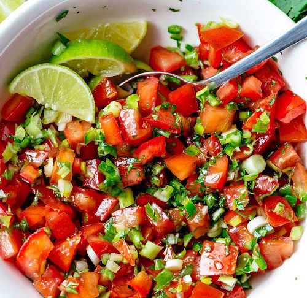

INGREDIENTES
2 tomate
½ cebolla morada
½ manojo de cilantro fresco
2 limones
1 pieza de sal
3 gotas de tabasco (opcional)
PREPARACION
Para empezar con la receta de pico de gallo primero debes lavar y cortar el tomate finamente. Procura no triturarlo, simplemente picarlo en cuadros muy pequeños de manera que se sientan los trozos.
A continuación, repetiremos el proceso pero con la cebolla. Ten en cuenta que para esta receta las medidas son orientativas ya que podrás añadir más o menos cebolla en función de lo que te guste.
Ahora le toca el turno al cilantro. Para hacer un buen pico de gallo es importante usar bastante cilantro así que no repares con este ingredientes. Pica las ramas lo más fino posible con ayuda de un cuchillo.
A continuación mezcla todo en un bol grande, procura revolver de forma envolvente para que se repartan de forma uniforme todos los ingredientes.
Finalmente exprime los limones sobre la mezcla y remueve bien, aprovecha y añade un poco de sal y prueba para corregir la sazón si es necesario. Puedes echar más limón o añadir más de cualquier ingrediente que consideres. En este momento puedes añadir el tabasco al pico de gallo si te gusta picante.
Conserva el pico de gallo en la nevera y deja que marine una media hora antes de servir para que el sabor sea más intenso.